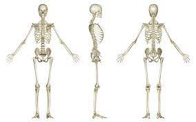

- The human skeleton, like that of other vertebrates, consists of two principal subdivisions, each with origins distinct from the others and each presenting certain individual features. These are (1) the axial, comprising the vertebral column—the spine—and much of the skull, and (2) the appendicular, to which the pelvic (hip) and pectoral (shoulder) girdles and the bones and cartilages of the limbs belong. Discussed in this article as part of the axial skeleton is a third subdivision, the visceral, comprising the lower jaw, some elements of the upper jaw, and the branchial arches, including the hyoid bone.
- human skeleton, the internal skeleton that serves as a framework for the body. This framework consists of many individual bones and cartilages. There also are bands of fibrous connective tissue—the ligaments and the tendons—in intimate relationship with the parts of the skeleton. This article is concerned primarily with the gross structure and the function of the skeleton of the normal human adult.
- When one considers the relation of these subdivisions of the skeleton to the soft parts of the human body—such as the nervous system, the digestive system, the respiratory system, the cardiovascular system, and the voluntary muscles of the muscle system—it is clear that the functions of the skeleton are of three different types: support, protection, and motion. Of these functions, support is the most primitive and the oldest; likewise, the axial part of the skeleton was the first to evolve. The vertebral column, corresponding to the notochord in lower organisms, is the main support of the trunk.
- The central nervous system lies largely within the axial skeleton, the brain being well protected by the cranium and the spinal cord by the vertebral column, by means of the bony neural arches (the arches of bone that encircle the spinal cord) and the intervening ligaments.